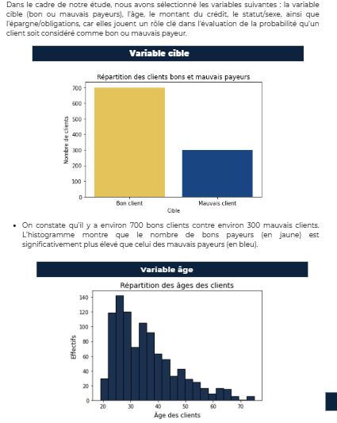

Description
A partir de données financières, il nous a été demandé de réaliser des visualisation graphiques sur Python.
Étapes
Voici les étapes principales que nous avons suivies :
- Collecte des données : Importation des données vers Python.
- Nettoyage des données : Renommer les données .
- Analyse exploratoire : Analyse statistique descriptive et visualisation des données.
- Aller plus loin: Modélisation en ACP.
Outils utilisés
| Catégorie | Outil | Description |
|---|---|---|
| Traitement | pandas | Manipulation et traitement des données. |
| Visualisation | matplotlib, seaborn | Création de graphiques et de visualisations. |
| Outil complémentaire | Excel | Préparation et observation des données. |
Résultats
Le résultat final de notre analyse est présenté ci-dessous :
C'est intéréssant aussi de voir qu'on peut intégrer de la statistique à de la programmation .